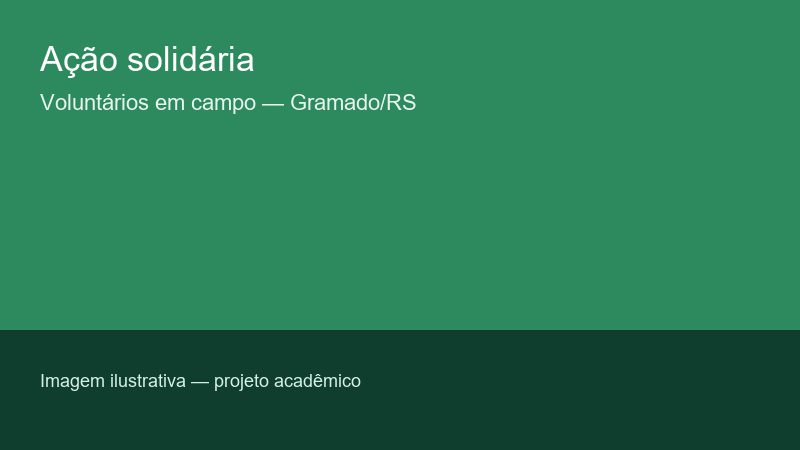

ONG Esperança Solidária

Somos uma organização sem fins lucrativos que atua em Gramado e região com educação, alimentação e acolhimento a famílias em vulnerabilidade. Transparência e presença no território geram confiança para quem quer ajudar.
Nossa missão
Reduzir a desigualdade social por meio de projetos contínuos, parcerias locais e o engajamento de quem doa tempo, recurso ou as duas coisas.
Como você pode ajudar
Conheça nossos projetos ou faça seu cadastro como doador ou voluntário.